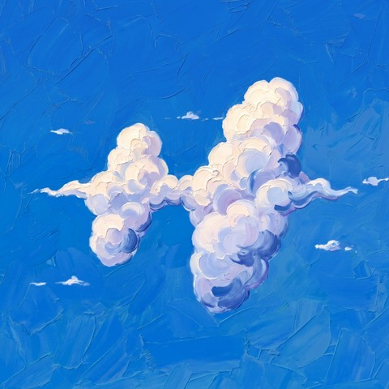
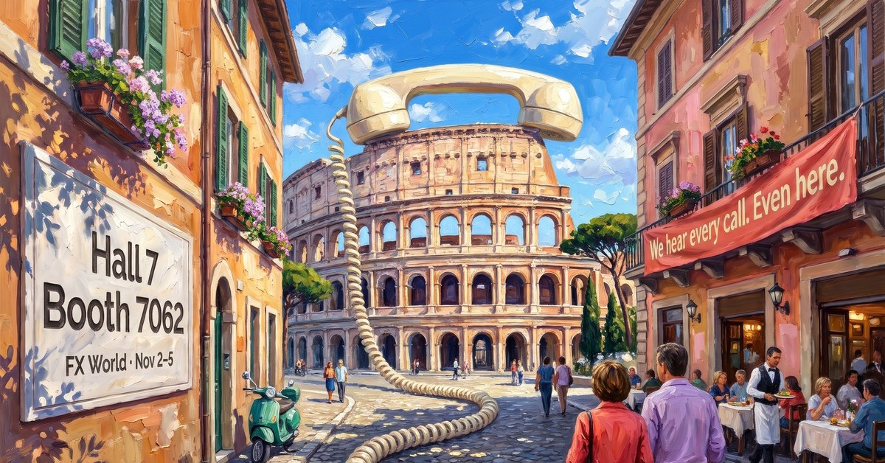
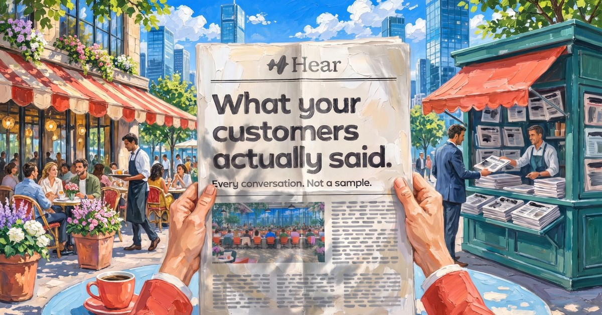
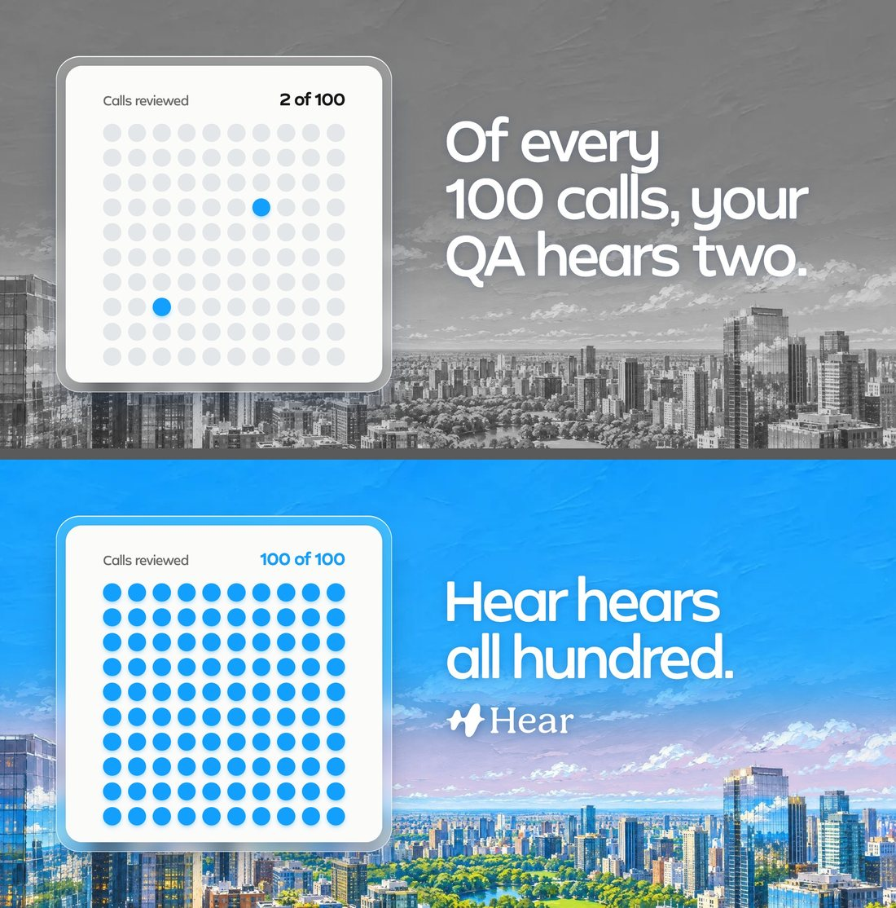
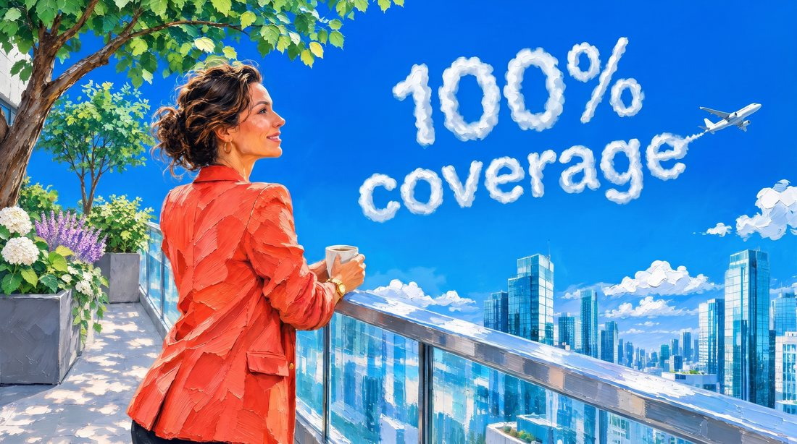
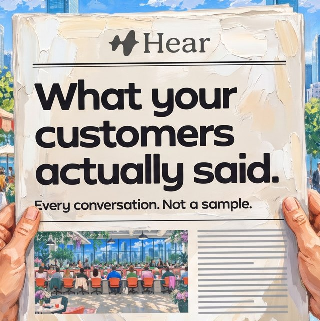

Hear · יסודות המותג
איך המותג נראה ונשמע: הלוגו, הצבעים, הפונט, סגנון הציור והטון. כל מה שכתוב כאן נלקח ממה שכבר אושר. מה שעוד לא הוחלט מופיע בסוף.
1. הלוגו
הסימן והשם יחד. לתמונת פרופיל משתמשים בסימן כענן.
public/hear-logo.svgpublic/hear-logo-dark.svg
docs/video-factory/brand/logo-cloud/cloud-mark-avatar-800.png- רק הלוגו. לא כותבים "hear.ai" או כתובת אחרת לידו.
- לא מציירים את הלוגו מחדש ולא ממלאים אותו בציור. הניסיון ללוגו ממולא בצבע נפסל. יוצא דופן אחד, של אופיר: הסימן כענן.
- הענן הוא קודם כול ענן. הצורה שלו קרובה לסימן ולא זהה לו, והשמיים מאחוריו כחול עמוק ואחיד כדי שיבלוט.
- בתוך ציור הלוגו הוא דפוס על חפץ, כמו בראש העיתון או בראש הקבלה. הוא לא מדבקה שמונחת מעל הציור.
2. צבעים
הערכים של מערכת העיצוב של המוצר ושל האתר. בציורים הצבעים הם צבע שמן ולא ערך קבוע, אבל הם אותה משפחה: שמיים בכחול, קורל, סגול וירוק.
#F4F3F1
#FFFFFF
#181818
#464646
#FF7056
#139FFD
#1779F7
#4BA373
#D799E2
#455F61
- צבע מבטא אחד בכל מסך או עמוד. לא משפרים עמוד בעזרת עוד צבעים ותגים.
- הקורל הוא חתימה, לא רקע. משתמשים בו מעט.
- שמיים מצוירים עדיפים על מילוי שטוח בצבע מותג. כך נבחרו החלקים באתר.
3. פונט
Byrd, בכל מקום: באתר, במוצר, בפרסומות ובכתב שבתוך הציורים. בעברית משתמשים ב-Noto Sans Hebrew, כמו במוצר.
What your customers actually said.
Byrd Bold 700 · כותרות בתוך ציורים ובפרסומותWe hear every call. Even here.
Byrd SemiBold 600 · כותרות משנה, הדגשותEvery conversation. Not a sample.
Byrd Medium 500 · כותרות קטנות, כפתוריםRun your contact center on what customers actually say.
Byrd Regular 400 · הכותרות הגדולות של האתר, וטקסט רץ- אותיות רגילות. אות גדולה רק בתחילת משפט. לא כותבים כותרות באותיות גדולות בלבד.
- כתב בתוך ציור הוא תמיד בפונט שלנו, וגדול. החפץ לא בוחר את הפונט: שלט שיש באותיות רומיות נפסל.
- כותרות צפופות מעט, טקסט רץ ברווח רגיל.
4. סגנון הציור
כל התמונות של המותג הן מאותה עיר ומאותה יד.



- צבע שמן עבה, בסכין ציירים. כתמים חדים עם קצוות ברורים. שום דבר לא חלק, מרוסס או מצולם.
- אור יום בהיר וצבעים רוויים.
- העיר של Hear: מגדלי זכוכית, שמיים כחולים עם עננים עבים, קורל, סגול, ירוק, פרחים ואנשים.
- ריאליזם בוגר. לא קריקטורה ולא איור לילדים.
- העולם מלא מקצה לקצה. לא מרוקנים את התמונה בשביל המסר. רק האזור שסביב המסר נשאר פתוח.
- נקודת מבט של אדם: צופה בקהל, לקוח ליד שולחן, מנהלת על מרפסת. אנשים קטנים או מהגב, לא פנים קרובות מול המצלמה.



- ציור לא נחתך בתוך פריסה, ולא מחלקים תמונה אחת לשתיים.
5. המסר חי בתוך העולם
העיקרון של כל תמונת מותג: העולם עצמו כותב את המסר.
- המילים הן חפץ או אירוע בסצנה: קבלה על שולחן, עשן של מטוס, בלוני אותיות, כותרת בעיתון, שלט שיש, עננים.
- ציור אחד, רעיון אחד, מעט מילים.
- הכתב מצויר כחלק מהחפץ: חקוק, מודפס על נייר, מצויר על בד. לא שכבה מעל.
- הכול בתוך המסגרת. גם בשלט חוצות הרעיון נמצא בתוך העיצוב ולא מחוצה לו.
- המבחן לכל רעיון: משפט אחד של מה אדם זר מבין מהתמונה על Hear. אין משפט, אין רעיון.
6. טון ומשפטים
חגיגי, שנון ואופטימי. Hear היא התשובה האופטימית לשוק תקוע.
- מדברים על מה שהלקוחות אמרו, לא על טכנולוגיה.
- Hear מנתח שיחות אחרי שהסתיימו. לא מתארים התערבות בזמן השיחה.
- לא ממציאים מספרים, לקוחות או יכולות. מספר שלא אומת מסומן ככזה.
- משפטים קצרים. האנרגיה באה ממשפט קצר וממספר אמיתי, לא משמות תואר.
| המשפט | איפה הוא מופיע | של מי |
|---|---|---|
| We hear every call. Even here. | רומא, שלט החוצות | של אופיר |
| Just growth delivered. | הקבלה בבית הקפה | של אופיר |
| 100% coverage | המטוס | של אופיר |
| New feature release · Hear Studio | התהלוכה | של אופיר |
| Stop fighting fires. Start growing. | סוף שני הסרטים | מהסרטים המאושרים |
| Your AI-powered operations center. | שורת הסיום של הסרטים | מהסרטים המאושרים |
| Run your contact center on what customers actually say. | הכותרת של האתר | מהאתר |
| Every conversation. Not a sample. | העיתון, הקמפיין הקודם | ניסוח שלי, בתמונה מאושרת |
| What your customers actually said. | עיתון הבוקר | ניסוח שלי, בתמונה מאושרת |
| Every customer call, heard. | תמונת הנושא ללינקדאין | ניסוח שלי, בתמונה מאושרת |
| A sample hears 2%. Hear hears 100%. | הבלונים | הנתון 2% לא מאומת |
7. מה עוד לא הוחלט
את אלה לא קבעתי בעצמי. הם מחכים להחלטה.
- שטח נקי וגודל מינימלי ללוגו. אין כלל כתוב.
- לוגו על פרסומת שהיא ציור מלא, כמו שלט החוצות: האם מוסיפים, איפה, ובאיזו גרסה.
- רישיון הפונט. לפי הרשימות שלי קובצי Byrd בפרויקט הם גרסת ניסיון. כדאי לוודא לפני שימוש חיצוני.
- הנתון של 2% ושורת ה-Churn בקבלה לא אומתו.
- גרסה בעברית של תמונות המותג: האם צריך, ואיך נראה כתב עברי בתוך ציור.
- שלט התחנה, התיק והמרצ'נדייז מהקמפיין הקודם עוד לא נעשו מחדש.